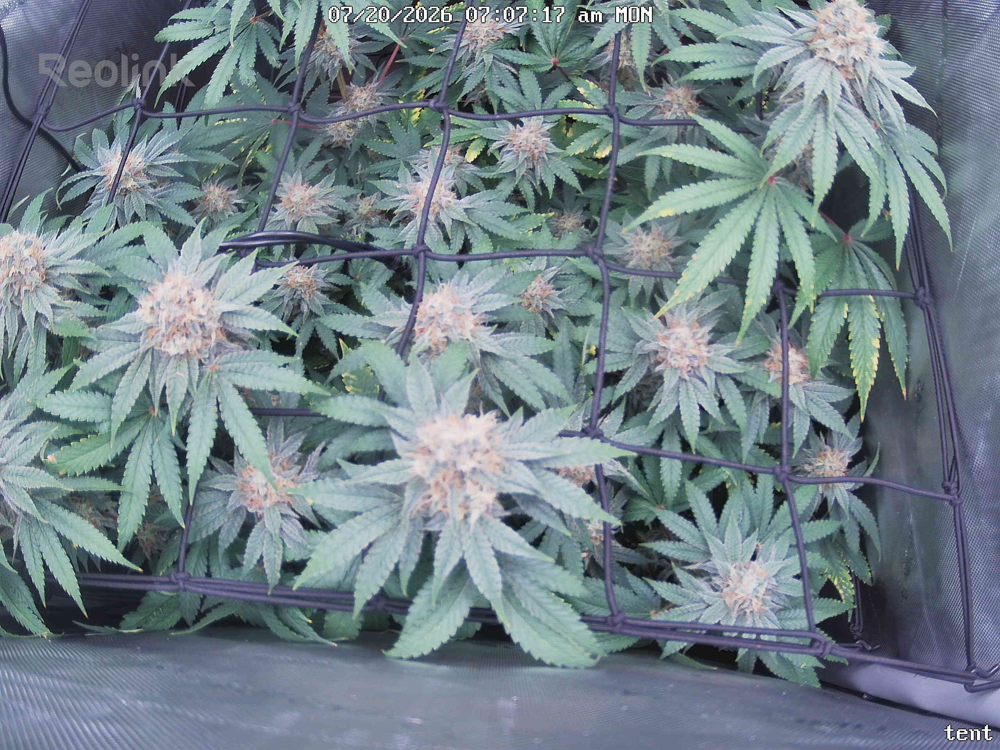
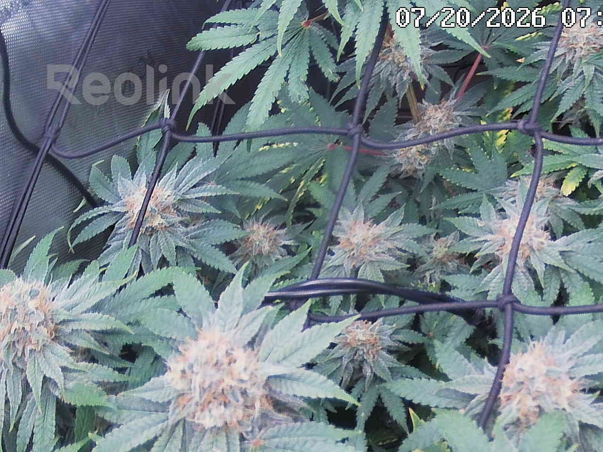
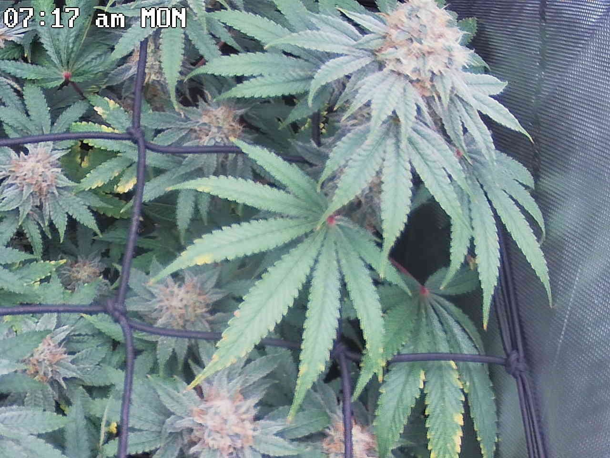
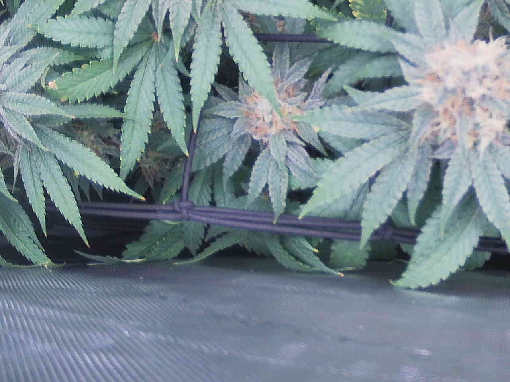
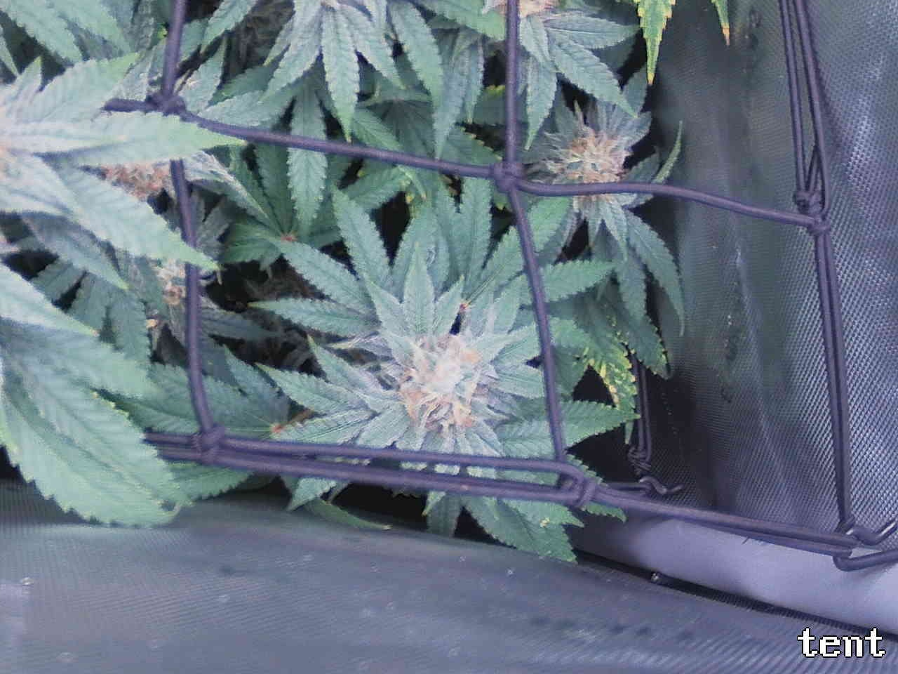

Per-quadrant analysis — the canopy shot was split into a 2x2 grid and each region compared against the previous day.
All four quadrants are marked OK; none are flagged ATTENTION. The plant reads as healthy and on-track for late flower (~day 46–47): frosty tops with pistils creaming toward tan/amber across all four tiles, structure unchanged over the 24h interval (7/19→7/20), and no bud rot, powdery mildew, pest stippling, webbing, tacoing, or bleaching resolvable at this resolution. The only recurring concern is bottom-up/edge yellowing on interior and lower fan leaves — most consistent with documented late-flower senescence but, per the notes' own caveats, not distinguishable from a concurrent potassium draw (serration-margin pattern logged 7/13) without a leaf-level macro shot; it remains stable and confined to shaded lower foliage in every quadrant, so it is a watch item, not worsening. Single most important action: capture a close-up of an affected margin/interveinal leaf to score K-draw vs. senescence, since photo-level analysis cannot separate the two.
Bud sites (whole plant, estimate): 17-28
Bud sites: 6-9
Bud sites: 4-7
Bud sites: 3-5